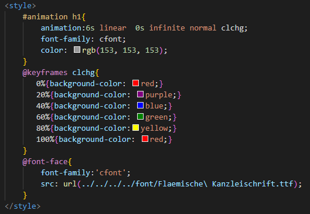

animation
アニメーションに関する指定をまとめて行う
HTML
- <h1>Merry Christmas</h1>
CSS

実例
Merry Christmas
アニメーションに関するスタイルを一括で指定できる
時間、変化速度、開始までの時間、繰り返す回数など...
%で変化の段階をつける
色だけでなく、透明度や場所など様々な部分を変化させられる
- <h1>Merry Christmas</h1>

アニメーションに関するスタイルを一括で指定できる
時間、変化速度、開始までの時間、繰り返す回数など...
%で変化の段階をつける
色だけでなく、透明度や場所など様々な部分を変化させられる